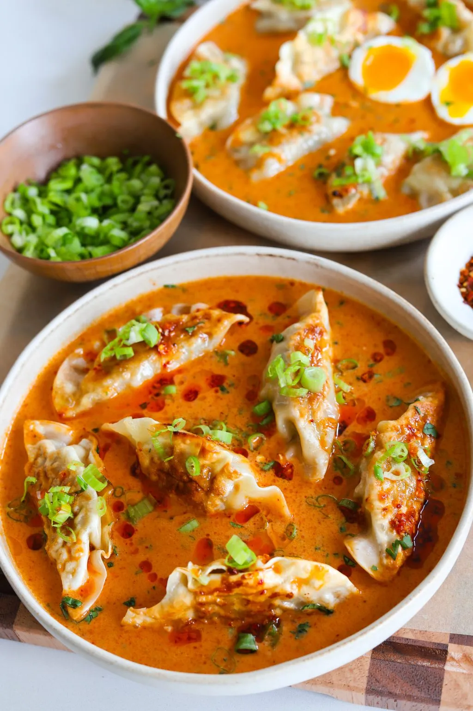
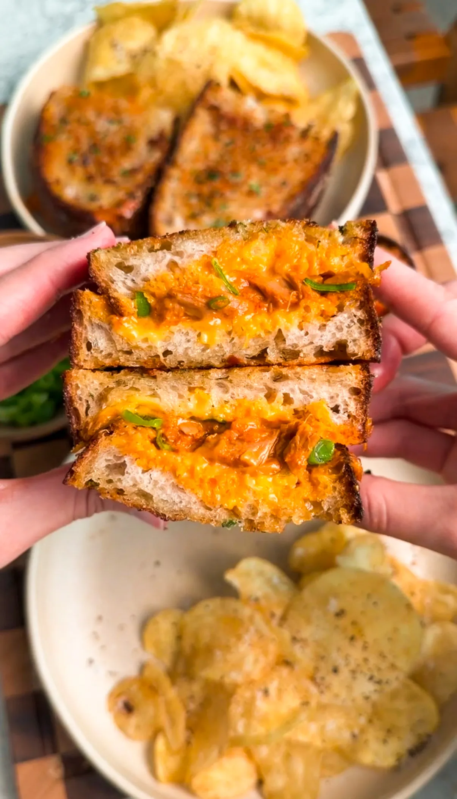
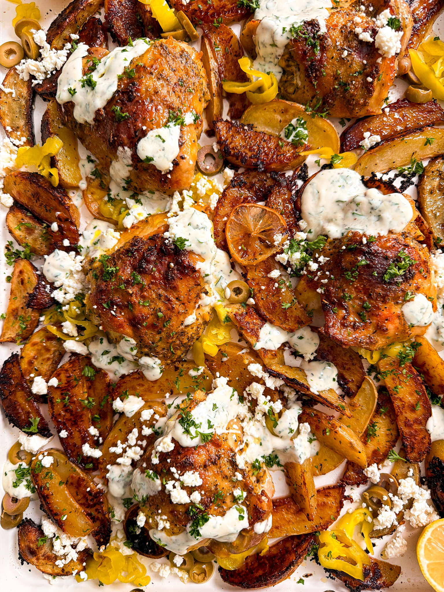
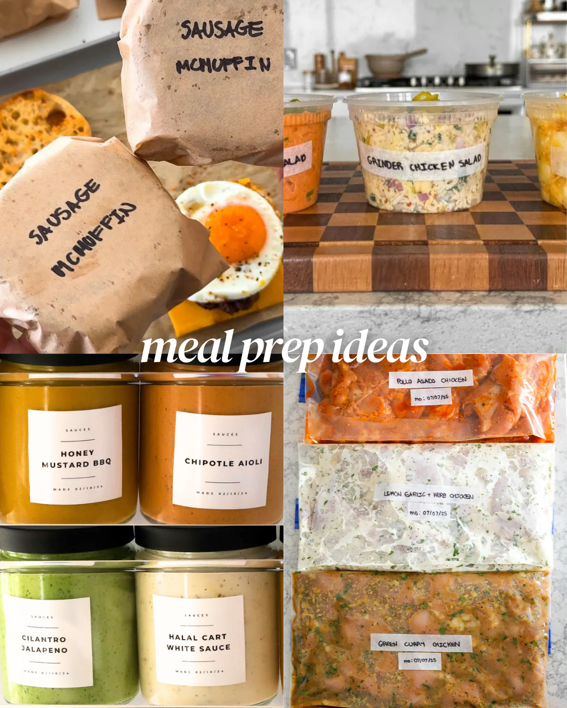

A Thai classic gets a cozy twist in this red curry dumpling soup. It’s the perfect comforting meal when you’re sick or just feeling a little under the weather. Use any dumplings or wontons you love — vegetarian, chicken, or even beef — and let them soak up all that bold, spicy broth.
Jump To Recipe

